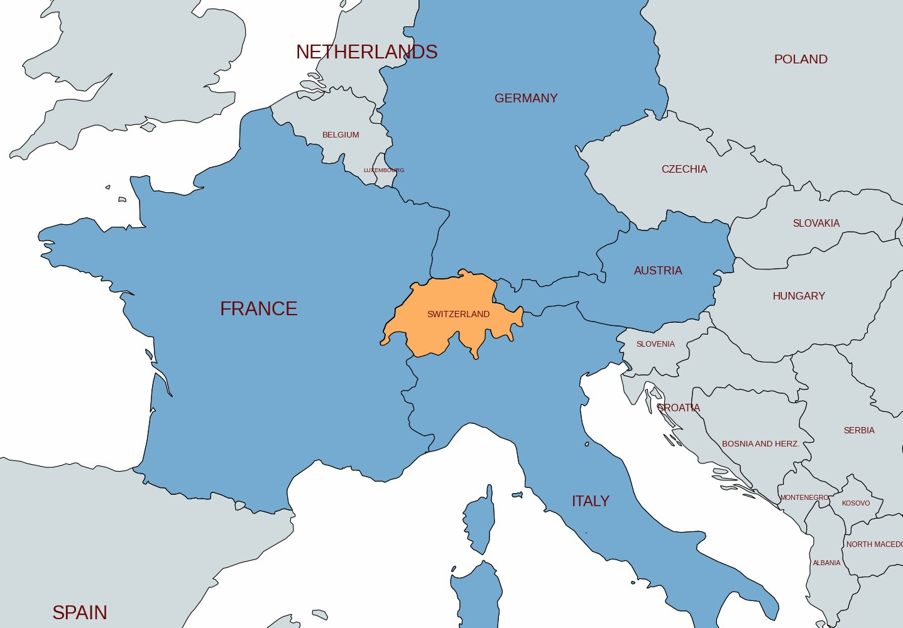
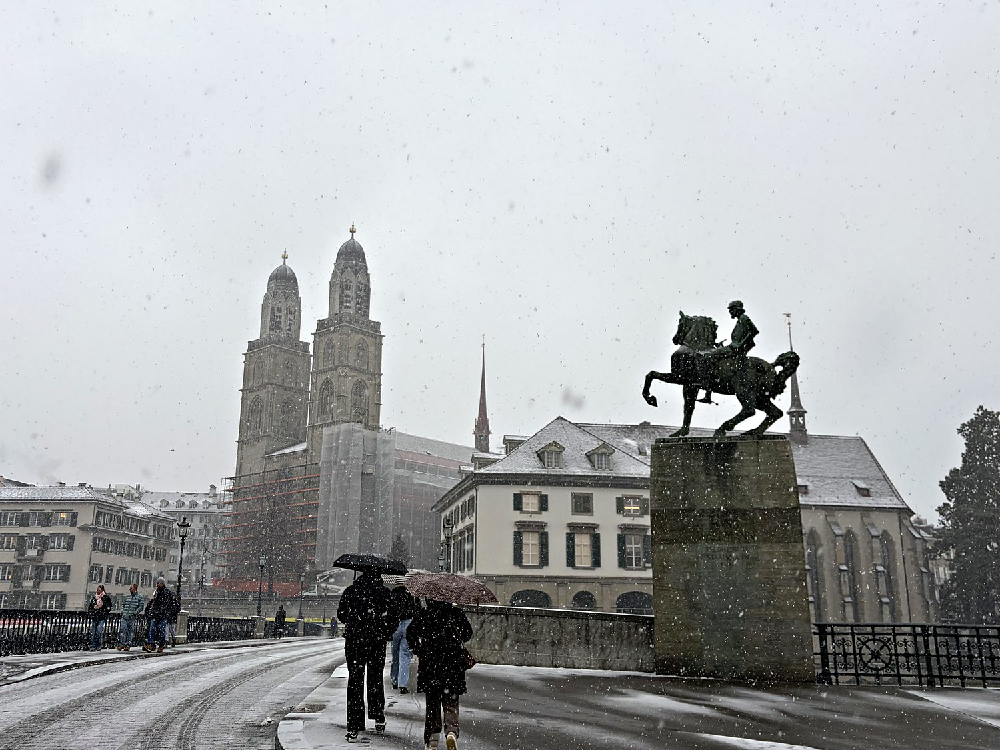
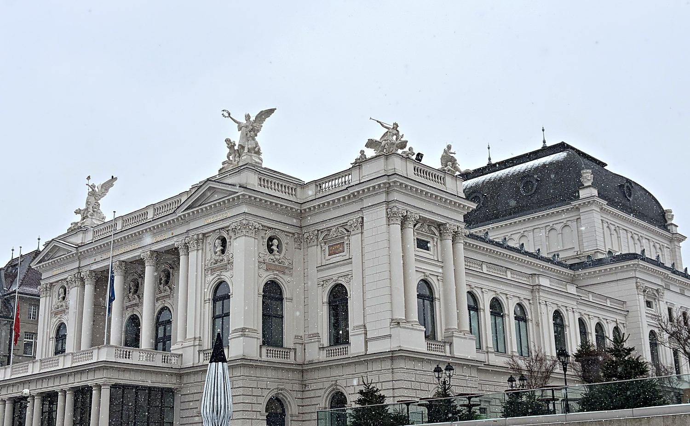
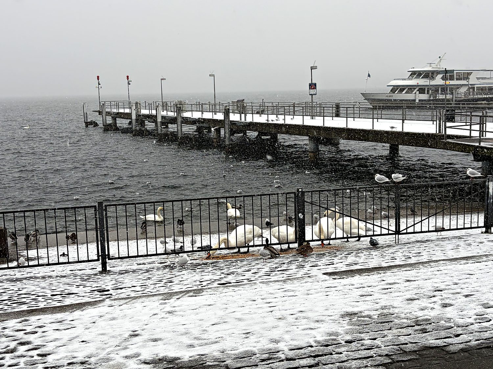

I visited Zurich in January 2026 with my parents, using it as our base for a wider Alpine ramble that included the day trip to Liechtenstein. We arrived by high-speed train from Paris on roughly two and a half hours of sleep, and the city greeted us with the single best possible welcome: as we walked to our guesthouse, it began to snow. Over the next day Zurich vanished beneath a soft grey hush, its medieval rooftops and church spires powdered white, and I found myself completely charmed. I will admit though that some of my serenity evaporated each time I bought food. Switzerland is spectacularly, cinematically expensive, the kind of place where a modest burger can cost the equivalent of a small kidney, and where I began to suspect the snowflakes themselves carried a service charge.
Zurich is Switzerland's largest city and its financial heart. To the surprise of many visitors, it is not its capital: that honor belongs to the more modest Bern. The city began life as Turicum, a Roman customs post on the Limmat river, and two millennia later extorting money from people passing through remains very much the local specialty. Its old town is a compact maze of guild houses, fountains, and steep lanes that reward aimless wandering, and beneath the falling snow the whole place took on the quiet magic of a shaken snow globe. In a little over two hours my mother and I looped past nearly all of it: the Grossmünster, the Fraumünster, the opera house, the shop-lined Bahnhofstrasse, and the Lindenhof hill, where the Romans once kept their fort and where the view over the white rooftops made the cold entirely worth it.

Zurich's most consequential export was not a watch or a bar of chocolate but an idea. In 1519, a priest named Huldrych Zwingli began preaching at the Grossmünster and lit the fuse of the Swiss-German Reformation, breaking with Rome and reshaping Christianity across the region. Zwingli's followers took his call for austerity literally, stripping the city's churches of their organs, statues, and ornamentation in a burst of iconoclasm that explains why so many Zurich churches remain strikingly bare inside. This was all unfolding within the Swiss Confederation, that famously stubborn alliance of cantons founded in 1291 which turned neutrality and direct democracy into a national religion of its own. The country remains so committed to minding its own business that it did not get around to joining the United Nations until 2002.
If the Reformation gave Zurich its character, banking gave it its fortune. Over the past two centuries the city transformed itself into one of the world's great financial capitals, its name becoming shorthand for private banking, gold vaults, and a discretion so legendary it was practically a national export. The Paradeplatz square sits at the heart of it all, and the elegant Bahnhofstrasse that runs from the main station down to the lake is lined with the boutiques and watchmakers that this concentration of wealth supports. All of it helps explain why Switzerland consistently ranks among the richest and most expensive countries on Earth, and why the country juggles four official languages (German, French, Italian, and Romansh) without appearing to break a sweat.
The Grossmünster, with its distinctive twin towers, is the beating heart of that history. This is the very church where Zwingli preached the Reformation into being. Construction of the present Romanesque structure began around 1100, and legend holds that Charlemagne himself founded a church on this spot after his horse spontaneously knelt at the graves of Zurich's patron saints, Felix and Regula. Local tradition insists that these saints were beheaded nearby and then calmly picked up their own heads and walked uphill to choose their burial site. Watching the towers materialize through the falling snow, flanked by an equestrian statue and a huddle of umbrella-toting locals, I understood why this modest grey church punches so far above its architectural weight.

A short walk from the Grossmünster stands the Zürich Opera House, a lavish neoclassical confection of columns, cherubs, and trumpeting stone angels completed in 1891. Financed by a rapidly enriching city and now home to one of Europe's most respected opera and ballet companies, it embodies the cultured, moneyed side of Zurich that its plain Reformation churches so carefully hid. There is a nice irony in the contrast: the same city that once stripped its sanctuaries down to bare grey stone poured all of its pent-up appetite for spectacle into this building instead. Watching the snow settle over its rooftop statues, I thought it looked less like a working theater than an enormous wedding cake someone had left out in a blizzard.

I ended the day where Zurich itself begins: at the shore of the Zürichsee, the long glacial lake that stretches south from the city's edge. In summer the locals famously swim in its startlingly clean water and cruise it by paddle steamer. On the snowy January afternoon I visited, it had emptied into a hushed expanse of grey, a lone ferry idling at a frosted pier while a huddle of swans sat serenely unbothered by the falling snow. Zurich is a city quietly obsessed with quality, from its banks, its trains, and its chocolate, and the lake feels like the wellspring of that obsession, a vast, cold, immaculate mirror the city has spent centuries trying to live up to. It made a serene place to linger, frozen fingers and all, before we caught the train back to Paris.
